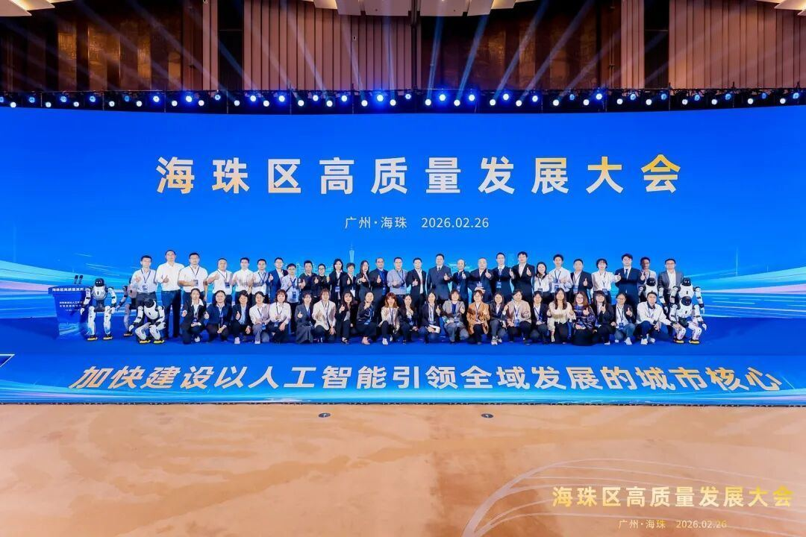
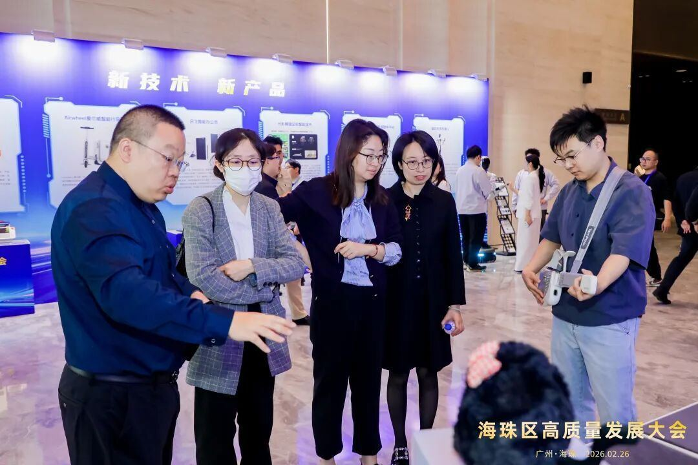
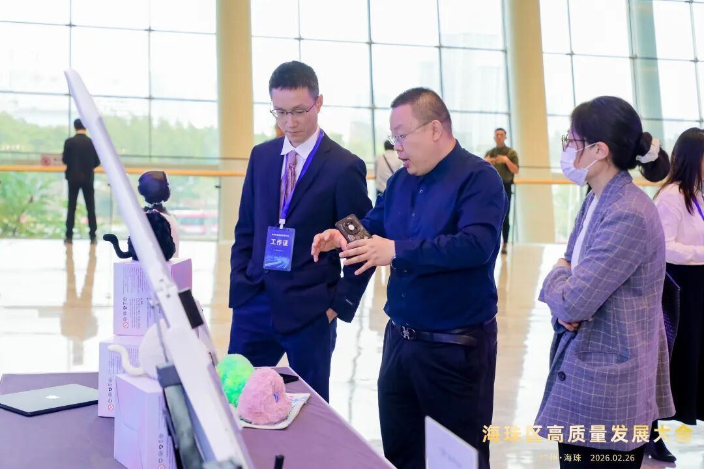
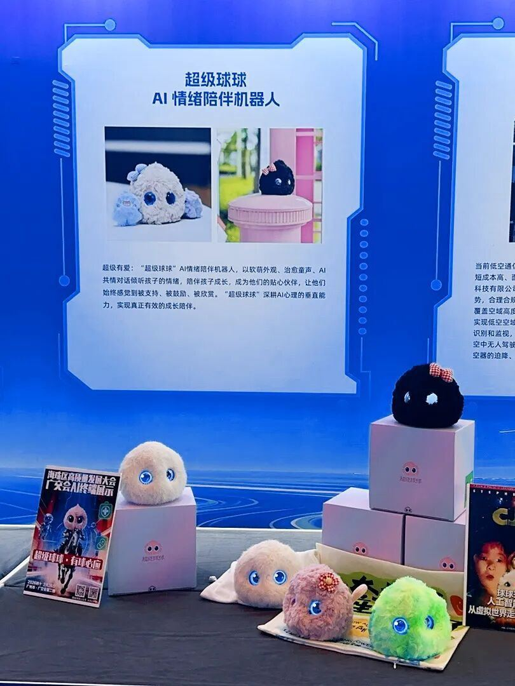
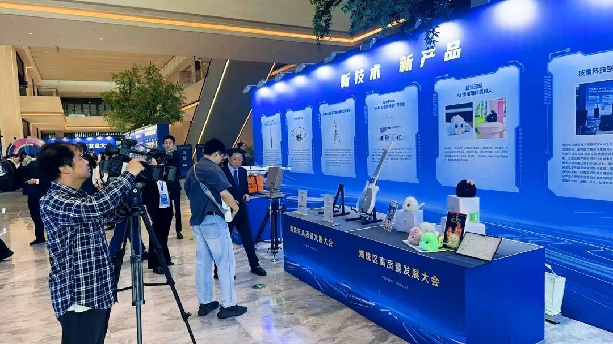
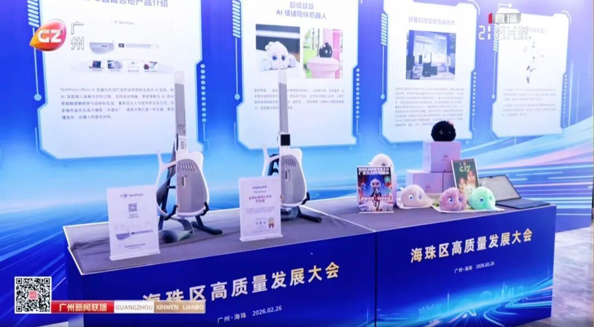

⼤会期间，共有14家企业集中亮相了新技术、新产品。其中，超级球球作为AI情绪疗愈领域的创新成果，获得了在场嘉宾的⾼度关注与认可。中国国家创新与发展战略研究会学术委员会常务副主席⻩奇帆，海珠区区委书记蔡澍，区委副书记、区⻓⽑松柏，及海珠区各职能部⻔负责⼈先后莅临展台亲⾃体验产品，并就产品的技术特点与实际应⽤场景与爱智能的研发团队进⾏了深⼊交流。


值得⼀提的是，⼴东省电视台对本次⼤会也进⾏了充分报道，进⼀步提⾼了超级球球的品牌形象与影响⼒。

作为⼀家以“AI情绪疗愈”为核⼼的创新科技企业，超级有爱始终致⼒于将前沿的⼈⼯智能技术、物联⽹科技与专业的⼼理学理论深度融合，为⽤⼾打造可以感受到爱的AI伙伴。未来，公司将通过持续的技术创新与产品迭代，推动超级球球在更多场景下的落地，让科技真正温暖⼈⼼，惠及⼤众。

